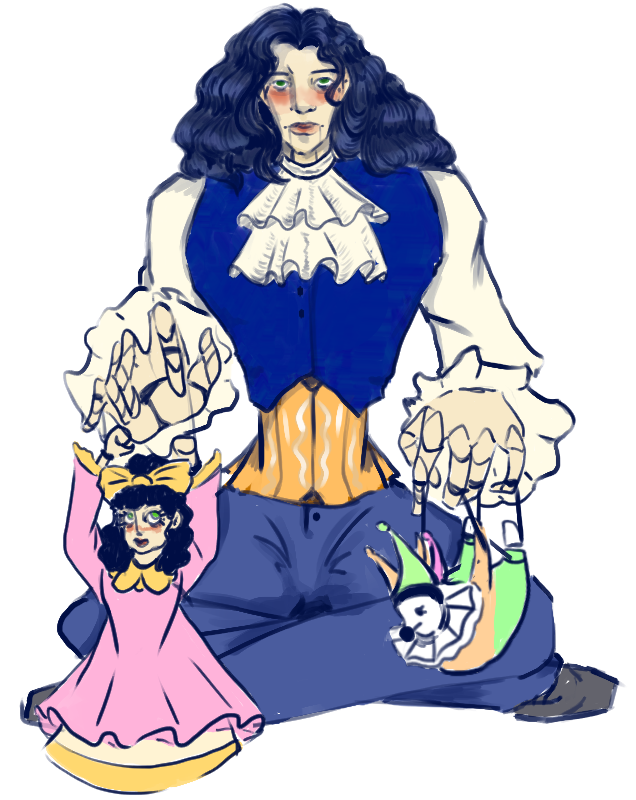
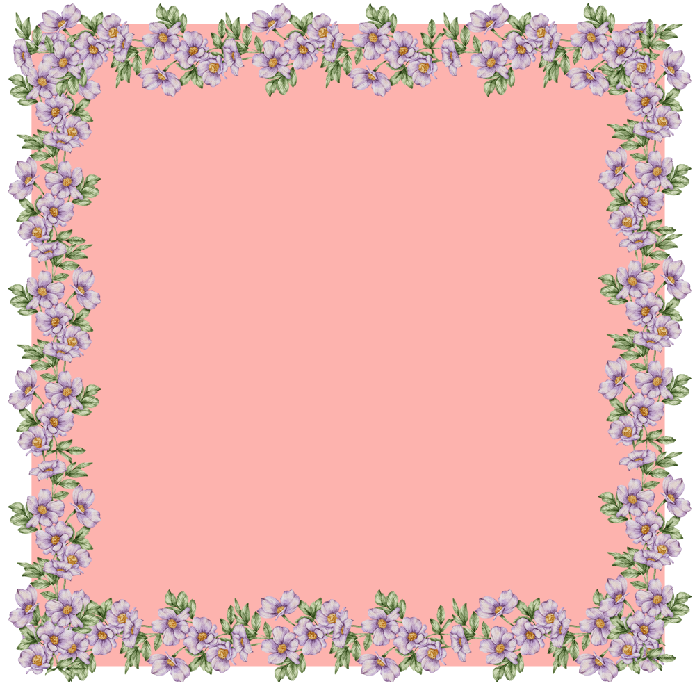

Valentine is, naturally, the kindest and sweetest angel there is. Created for healing and nurturing, he is a tender soul who can do no harm.
However, most other angels ostracize him, call him juvenile and prideful. What does that empty talk mean, nothing! They think they can lock him up and dump whoever they dislike on his head, well, they'll see.
Valentine's M0ODes change through a switch on the back of his head. There are only three currently in use though, unlike other Divine Rulers who posess four.